WWDC 2023: Analyze hangs with Instruments
Find hereafter a detailed summary of the above named video that belongs to a taxonomy of some WWDC footages.
The original video is available on the Apple official website (session 10248).
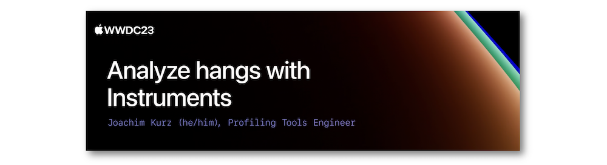
"User interface elements often mimic real-world interactions, including real-time responses. Apps with a noticeable delay in user interaction — a hang — can break that illusion and create frustration. We'll show you how to use Instruments to analyze, understand, and fix hangs in your apps on all Apple platforms. Discover how you can efficiently navigate an Instruments trace document, interpret trace data, and record additional profiling data to better understand your specific hang."
Hereafter, the underlined elements lead directly to the playback of the WWDC video at the appropriate moment.
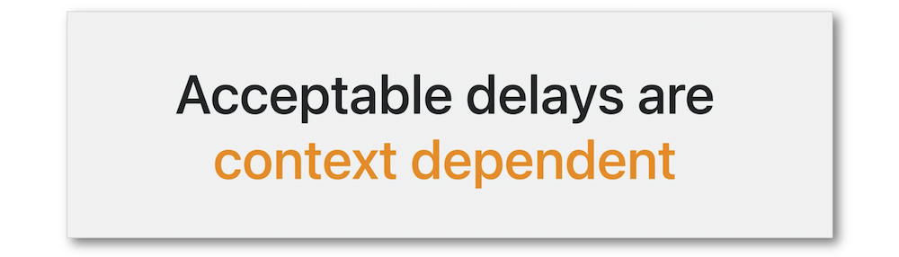
Overview #
A hang is a delay in the user interaction that might give rise to an unpleasant experience depending on the blocking duration.
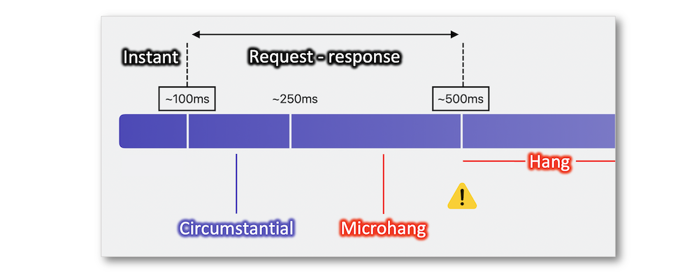
Finding hangs is based on many items to be aware of in order to save some time for finding out the appropriate solution.
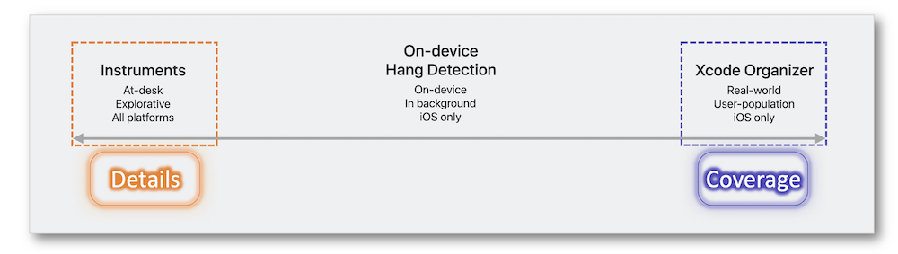
A deep comprehension of the event handling and the rendering loop is crucial to understand why hangs may happen.
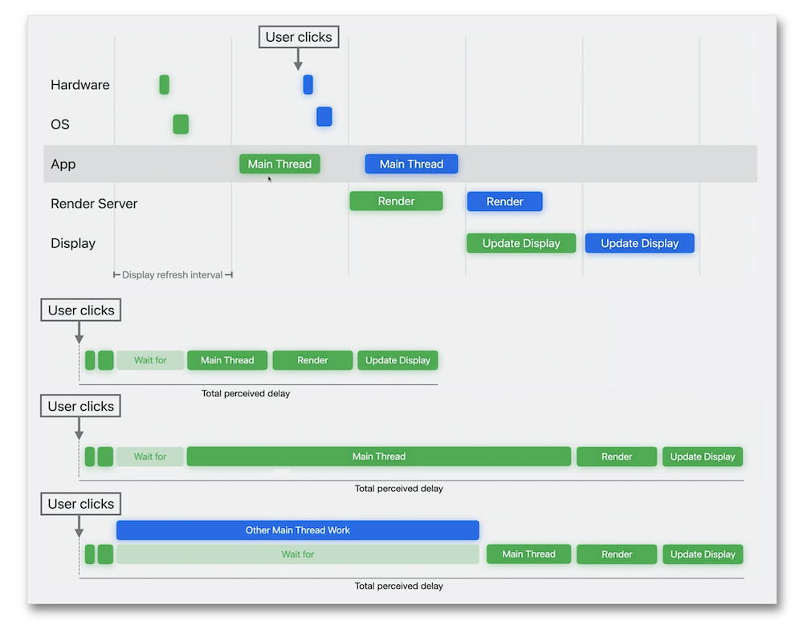
Unresponsiveness #
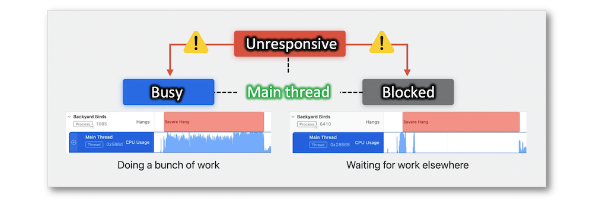
Understand the relationship between the potential items in an unresponsive main thread is vital to avoid misinterpretation in the hang analysis.
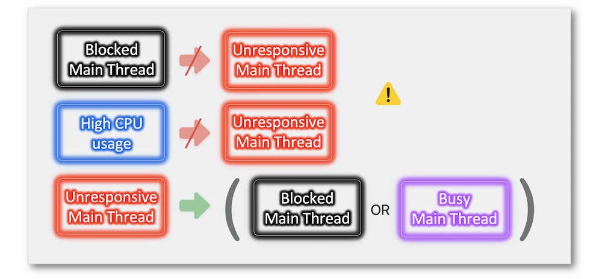
Busy Main Thread #
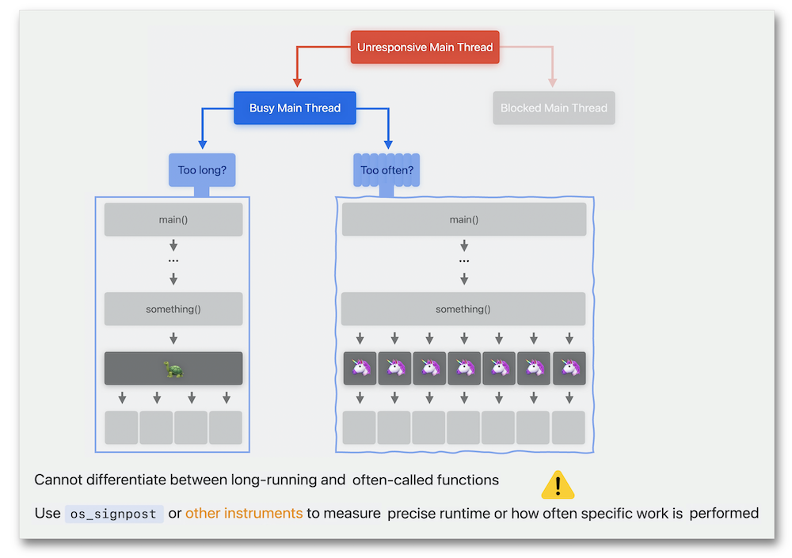
Excessive iteration #
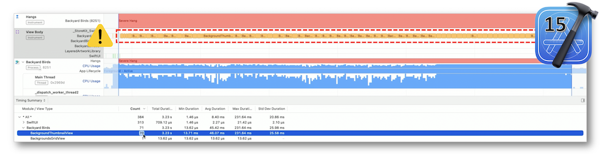
When the source of the problem may be identified, it's important to go straight to the code so as to find out its implementation.
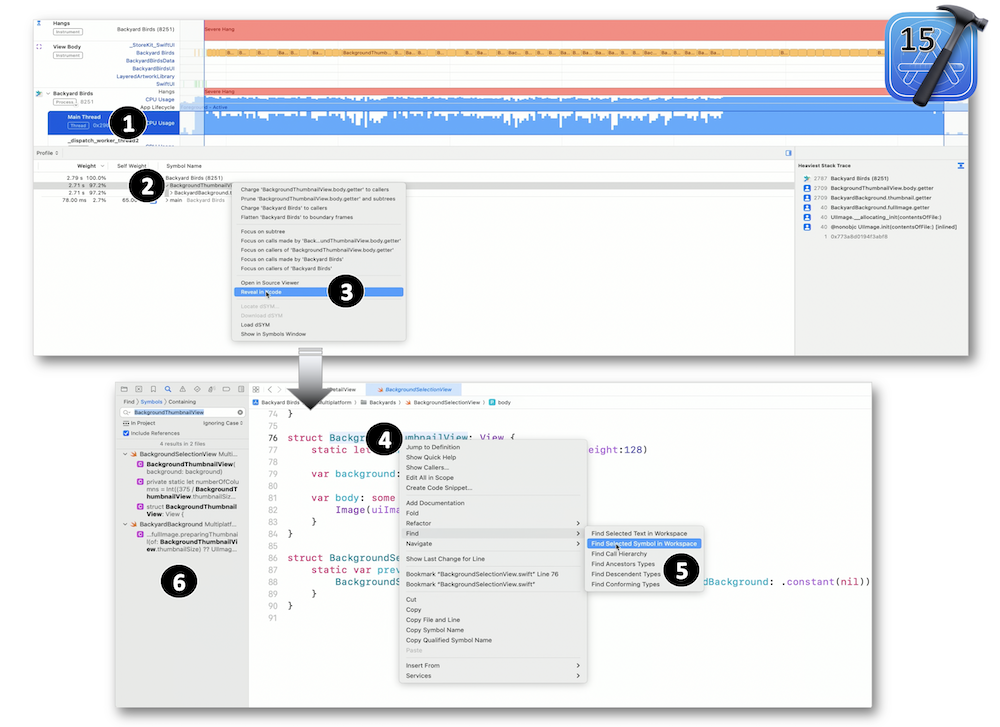
In the exposed example, the LazyVGrid introduced during the WWDC 2020 is responsible for the problem whose solution provides an immediate and smooth rendering after implementation.
Significant duration #
Finding out some delay on iPad is a good reason for solving micro hangs.
Once more, looking into the Instruments and writing an appropriate solution follow few milestones for a quick result.
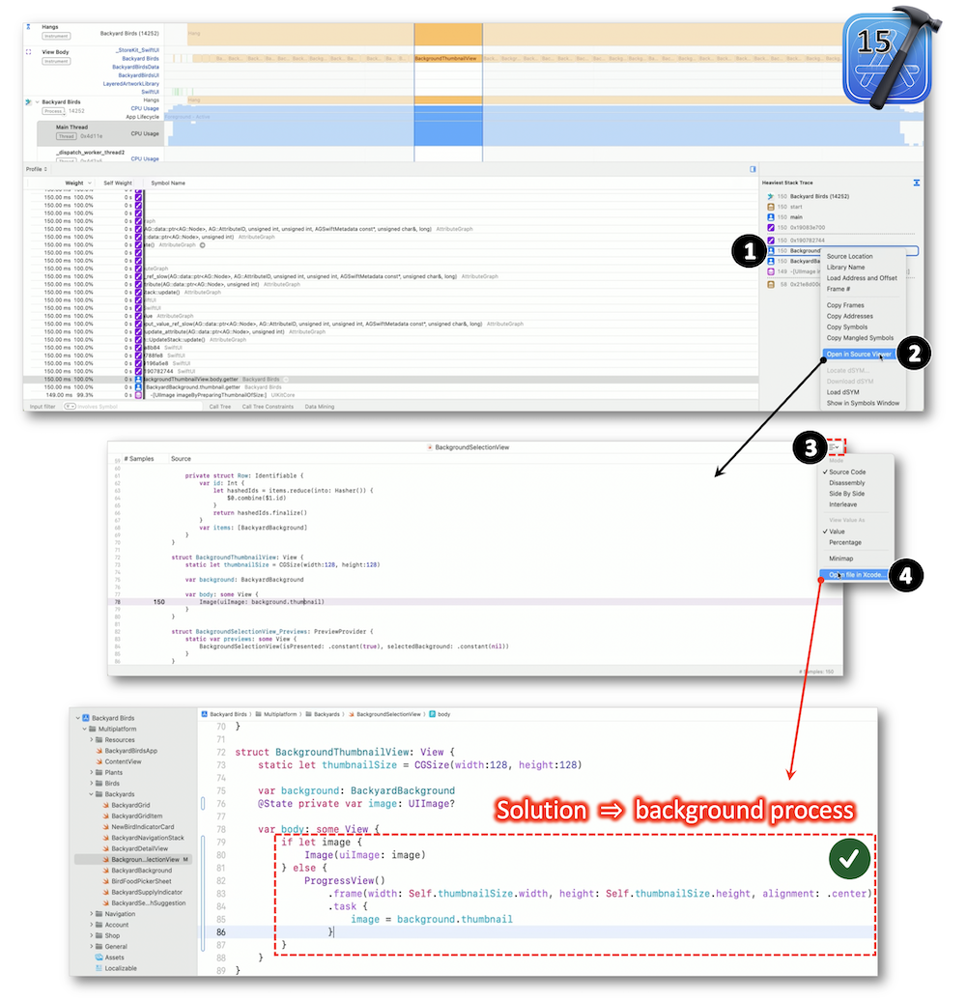
Sync/async #
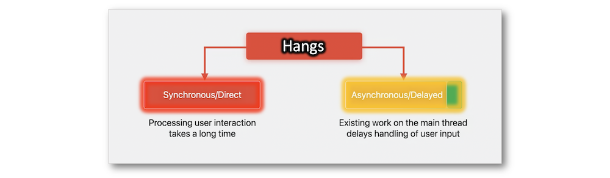
Applied to sync or async task, the instruments may measure the potential delay instead of the actually experienced delay.
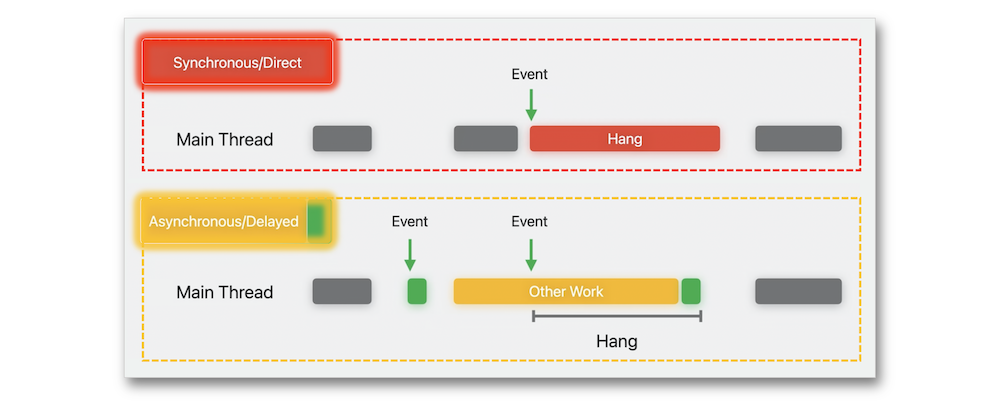
It's important to notice that using a task for a background process may involve an execution on the main thread.
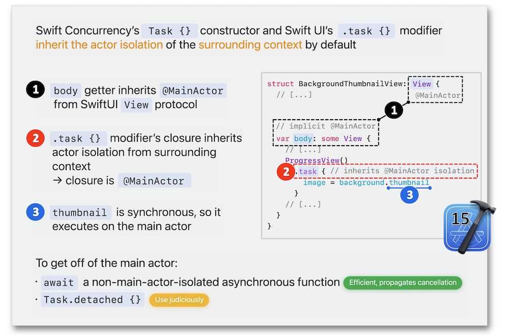
Following the recommendations, the appropriate solution provides an immediate visual result.
Blocked Main Thread #
A blocked main thread has a typical signature through the CPU usage.
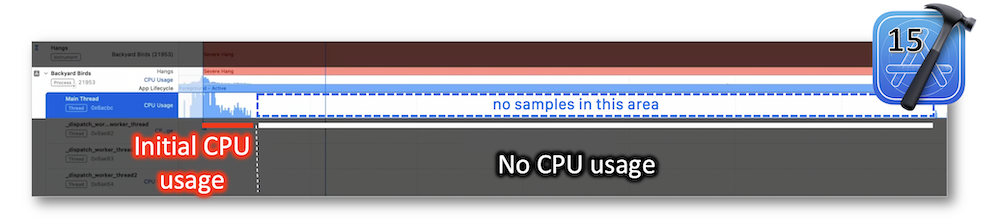
Usual case #
As no data is available in the call tree, the Thread State Trace instrument will be remarkably helpful along with the backtrace view that highlights the syscall blocking the thread through the call stack.
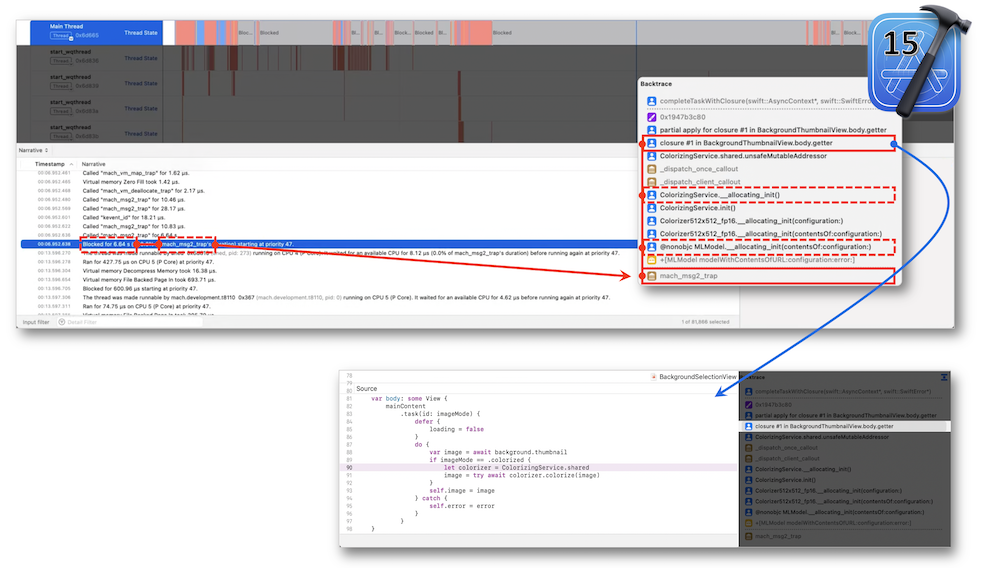
The proper solution for this use case lead towards notions to be handled carefully with Swift concurrency.
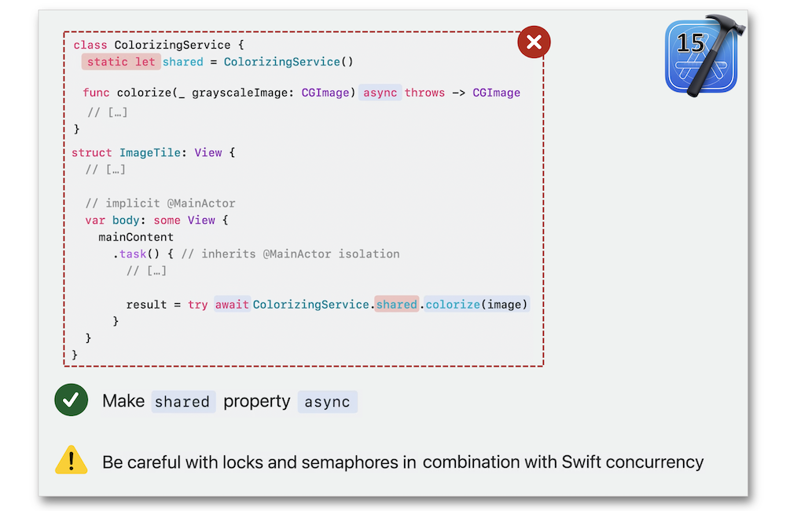
Tools' probe #
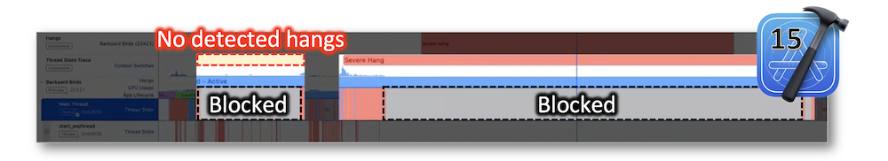
Rely only on the Thread States instrument might be a deception because it may lead to a blocked situation according to the system but definitely not from the user point of view: the Hangs instrument is clearly more reliable to define a genuine unresponsive blocked thread.
Tips & tricks #
-
Install your app on the device and automatically launch the Instruments ⟹ 🎬
-
Find the main thread and focus on the hangs ⟹ 🎬
-
Find the heaviest stack trace and filter the call tree view ⟹ 🎬
-
Get the
SwiftUIview body instrument ⟹ 🎬 -
Increase the height of a cramped element ⟹ 🎬
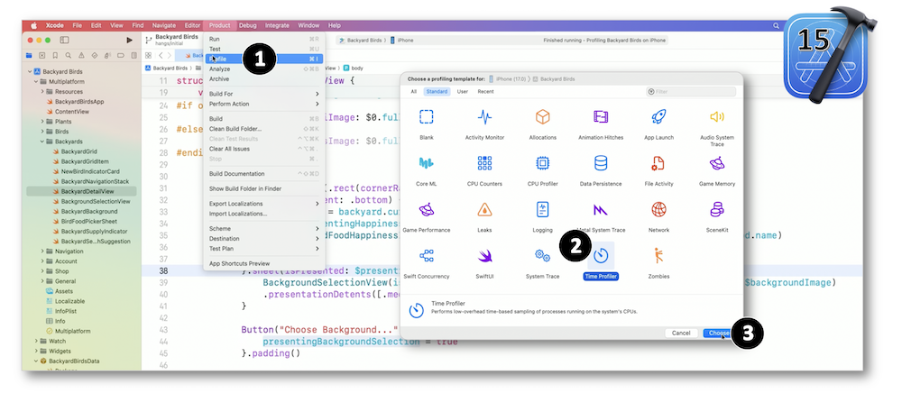
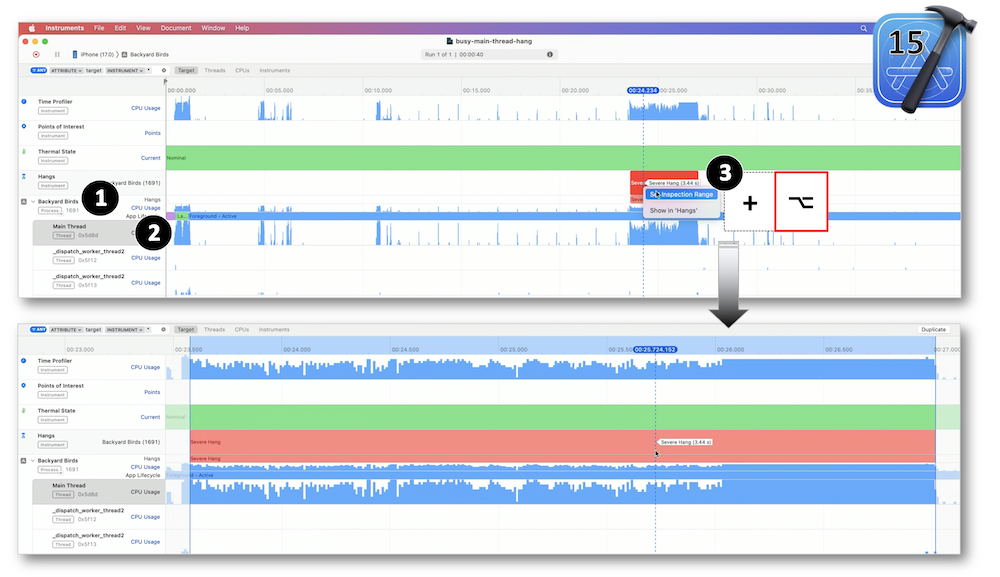
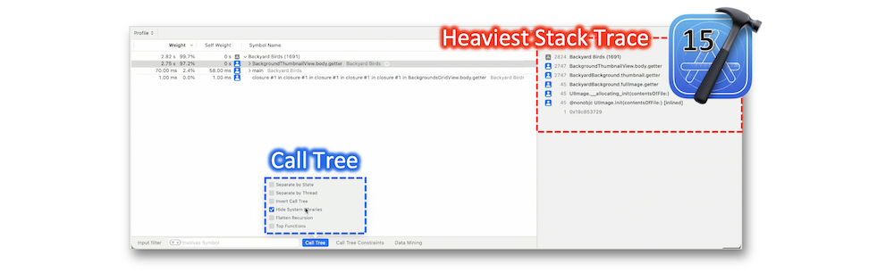
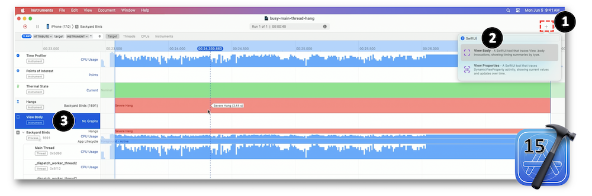
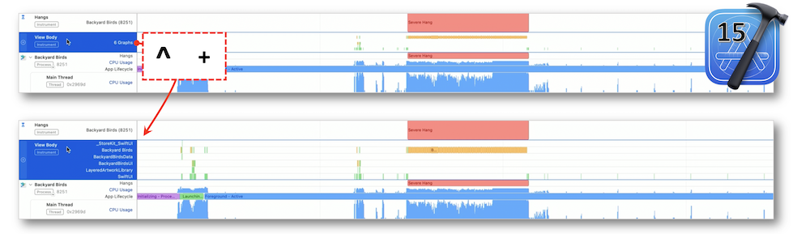